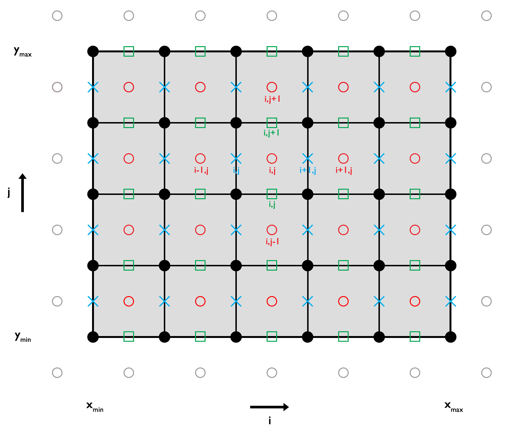

Temperature Equation (2D)
In two spatial dimensions ($x$ and $y$), the diffusive part of the temperature equation, assuming only radiogenic heat production, is given by:
\[\begin{equation} \rho c_p \frac{\partial T}{\partial t} = -\frac{\partial q_x}{\partial x} -\frac{\partial q_y}{\partial y} + \rho H, \end{equation}\]
where $\rho$ is the density [kg/m³], $c_p$ is the specific heat capacity [J/(kg·K)], $T$ is the temperature [K], $t$ is time [s], $q_x$ and $q_y$ are the heat flux components in the $x$ and $y$ directions [W/m²], and $H$ is the volumetric heat production rate per unit mass [W/kg].
By applying Fourier’s law and allowing for spatially variable thermal conductivity $k$, the equation becomes:
\[\begin{equation} \rho c_p \frac{\partial T}{\partial t} = \frac{\partial}{\partial x} k \frac{\partial T}{\partial x} + \frac{\partial}{\partial y} k \frac{\partial T}{\partial y} + \rho H. \end{equation}\]
If thermal parameters are assumed constant, this simplifies to:
\[\begin{equation} \frac{\partial T}{\partial t} = \kappa \left(\frac{\partial^2 T}{\partial x^2} + \frac{\partial^2 T}{\partial y^2}\right) + \frac{Q}{\rho c_p}, \end{equation}\]
where $\kappa = \frac{k}{\rho c_p}$ is the thermal diffusivity [m²/s] and $Q = \rho H$ is the volumetric heat production rate [W/m³].
Discretization and Numerical Schemes
To numerically solve equation (3), the spatial domain must be discretized and the relevant thermal parameters assigned to the appropriate computational nodes.

Figure 1. 2D Discretization. Conservative finite difference grid for solving the 2D diffusive temperature equation. Temperature values are defined at the centroids (red circles), while heat fluxes are computed at the vertices (horizontal flux: blue crosses; vertical flux: green squares). Ghost nodes (grey circles) are used to implement Dirichlet and Neumann boundary conditions.
A detailed implementation of various numerical schemes is provided in the example script Gaussian_Diffusion.jl. This example demonstrates the application of several methods for solving the diffusive part of the 2D temperature equation:
- Explicit scheme
- Fully implicit scheme
- Crank–Nicolson approach
- Alternating Direction Implicit (ADI) method
- Defect correction method
The numerical results are compared with the analytical solution of a Gaussian temperature distribution to assess accuracy and performance.
Each numerical scheme is briefly outlined in the following sections. For implementation details and derivations in one dimension, refer to the 1D solver documentation.
Explicit Scheme: FTCS (Forward Time, Centered Space)
For an explicit finite difference discretization, the numerical stability criterion (heat diffusion condition) is given by:
\[\begin{equation} \Delta{t} < \frac{1}{2 \kappa \left(\frac{1}{\Delta{x^2}}+\frac{1}{\Delta{y^2}}\right)} \end{equation}\]
where $\Delta x$ and $\Delta y$ denote the spatial grid spacing in the $x$ and $y$ directions, respectively. This condition must be satisfied to ensure numerical stability of the explicit scheme.
In two dimensions, the partial derivatives in equation (3) can be approximated using an explicit FTCS (Forward Time, Centered Space) finite difference scheme:
\[\begin{equation} \frac{T_{i,j}^{n+1} - T_{i,j}^{n} }{\Delta t} = \kappa \left( \frac{T_{i-1,j}^{n} - 2T_{i,j}^{n} + T_{i+1,j}^{n}}{\Delta{x}^2} + \frac{T_{i,j-1}^{n} - 2T_{i,j}^{n} + T_{i,j+1}^{n}}{\Delta{z^2}} \right) + \frac{Q_{i,j}^n}{\rho c_p}. \end{equation}\]
Here, $i$ and $j$ are the horizontal and vertical grid indices, respectively, $n$ is the time step index, $\Delta t $ is the time step size, and $\Delta x$, $\Delta y$ are the grid spacings in the horizontal and vertical directions.
Rearranging this equation to solve for the temperature at the next time step yields:
\[\begin{equation} T_{i,j}^{n+1} = T_{i,j}^{n} + a\left(T_{i-1,j}^{n} - 2T_{i,j}^{n} + T_{i+1,j}^{n}\right) + b\left(T_{i,j-1}^{n} - 2T_{i,j}^{n} + T_{i,j+1}^{n}\right) + \frac{Q_{i,j}^n \Delta{t}}{\rho c_p}, \end{equation}\]
where
\[\begin{equation} a = \frac{\kappa \Delta{t}}{\Delta{x^2}}, \quad b = \frac{\kappa \Delta{t}}{\Delta{y^2}}. \end{equation}\]
For implementation details, see the source code.
Boundary Conditions
To correctly impose boundary conditions, ghost nodes are used adjacent to the domain boundaries.
Dirichlet Boundary Conditions
Dirichlet conditions impose a fixed temperature value along the boundary. The ghost node temperatures are calculated as:
West boundary
\[\begin{equation} T_{G,W} = 2T_{BC,W} - T_{1,:} \end{equation}\]
East boundary
\[\begin{equation} T_{G,E} = 2T_{BC,E} - T_{ncx,:} \end{equation}\]
South boundary
\[\begin{equation} T_{G,S} = 2T_{BC,S} - T_{:,1} \end{equation}\]
North boundary
\[\begin{equation} T_{G,N} = 2T_{BC,N} - T_{:,ncy} \end{equation}\]
Here, $T_{BC,W}$, $T_{BC,E}$, $T_{BC,S}$, and $T_{BC,N}$ are the prescribed boundary temperatures on the west, east, south, and north boundaries, respectively. The notation $T_{i,:}$ and $T_{:,j}$ refers to slices along rows and columns.
Neumann Boundary Conditions
Neumann conditions impose a prescribed gradient (e.g., heat flux) across the boundary. Ghost node temperatures are computed as:
West boundary
\[\begin{equation} T_{G,W} = T_{1,:} - c_{W} \Delta{x}, \end{equation}\]
East boundary
\[\begin{equation} T_{G,E} = T_{ncx,:} + c_{E} \Delta{x}, \end{equation}\]
South boundary
\[\begin{equation} T_{G,S} = T_{:,1} - c_{S} \Delta{y}, \end{equation}\]
North boundary
\[\begin{equation} T_{G,N} = T_{:,ncy} + c_{N} \Delta{y}, \end{equation}\]
where
\[\begin{equation} \left. c_{W} = \frac{\partial{T}}{\partial{x}} \right\vert_{W}, \left. c_{E} = \frac{\partial{T}}{\partial{x}} \right\vert_{E}, \left. c_{S} = \frac{\partial{T}}{\partial{y}} \right\vert_{S}, \left. c_{N} = \frac{\partial{T}}{\partial{y}} \right\vert_{N}, \end{equation}\]
are the specified temperature gradients (or fluxes) at each boundary.
Once the ghost node temperatures are defined according to the chosen boundary conditions, equation (6) can be used to update the temperature at the centroids for the next time step.
Implicit Scheme: Backward Euler Method
In two dimensions, the temperature equation can be discretized using the implicit (Backward Euler) method as:
\[\begin{equation} \frac{T_{i,j}^{n+1}-T_{i,j}^n}{\Delta t} = \kappa \left( \frac{T_{i-1,j}^{n+1}-2T_{i,j}^{n+1}+T_{i+1,j}^{n+1}}{\Delta x^2} + \frac{T_{i,j-1}^{n+1}-2T_{i,j}^{n+1}+T_{i,j+1}^{n+1}}{\Delta y^2} \right) + \frac{Q_{i}^n}{\rho c_p}, \end{equation}\]
Here, $n$ and $n+1$ denote the current and next time steps, $\Delta t$ is the time step size, $\Delta x$ and $\Delta y$ are the grid spacings, and $i$, $j$ are the horizontal and vertical indices, respectively.
Rewriting this equation to separate known and unknown terms results in a linear system of equations of the form:
\[\begin{equation} -b T_{i,j-1}^{n+1} - a T_{i-1,j}^{n+1} + \left(2a + 2b + c \right) T_{i,j}^{n+1} - a T_{i+1,j}^{n+1} - b T_{i,j+1}^{n+1} = c T_{i,j}^n + \frac{Q_{i,j}^n}{\rho c_p}, \end{equation}\]
where
\[\begin{equation} a = \frac{\kappa}{\Delta{x^2}}, \quad b = \frac{\kappa}{\Delta{y^2}}, \quad c = \frac{1}{\Delta{t}}. \end{equation}\]
Boundary Conditions
Boundary conditions are imposed via ghost nodes, as previously described (see equations (7)–(14)). However, to ensure a symmetric coefficient matrix in the resulting linear system, both the coefficients and the right-hand side for centroids adjacent to the boundaries must be modified accordingly.
Dirichlet Boundary Conditions
West boundary
\[\begin{equation} -b T_{1,j-1}^{n+1} + \left(3 a + 2b + c\right) T_{1,j}^{n+1} - a T_{2,j}^{n+1} - b T_{1,j+1}^{n+1} = c T_{1,j}^{n} + 2 a T_{BC,W} + \frac{Q_{i,j}}{\rho c_p} \end{equation}\]
East boundary
\[\begin{equation} -b T_{ncx,j-1}^{n+1} - aT_{ncx-1,j}^{n+1} + \left(3 a + 2b + c\right) T_{ncx,j}^{n+1} - b T_{ncx,j+1}^{n+1} = c T_{ncx,j}^{n} + 2 a T_{BC,E} + \frac{Q_{i,j}}{\rho c_p} \end{equation}\]
South boundary
\[\begin{equation} -a T_{i-1,1}^{n+1} + \left(2a + 3b + c\right) T_{i,1}^{n+1} - a T_{i+1,1}^{n+1} - bT_{i,2}^{n+1} = c T_{i,1}^{n} + 2 b T_{BC,S} + \frac{Q_{i,j}}{\rho c_p} \end{equation}\]
North boundary
\[\begin{equation} -b T_{i,ncy}^{n+1} - aT_{i-1,ncy}^{n+1} + \left(2a + 3b + c\right) T_{i,ncy}^{n+1} - a T_{i+1,ncy}^{n+1} = c T_{i,ncy}^{n} + 2 b T_{BC,N} + \frac{Q_{i,j}}{\rho c_p} \end{equation}\]
Neumann Boundary Conditions
West boundary
\[\begin{equation} -b T_{1,j-1}^{n+1} + \left(a + 2b + c\right) T_{1,j}^{n+1} - a T_{2,j}^{n+1} - b T_{1,j+1}^{n+1} = c T_{1,j}^{n} - a c_W \Delta{x} + \frac{Q_{i,j}}{\rho c_p} \end{equation}\]
East boundary
\[\begin{equation} -b T_{ncx,j-1}^{n+1} - aT_{ncx-1,j}^{n+1} + \left(a + 2b + c\right) T_{ncx,j}^{n+1} - b T_{ncx,j+1}^{n+1} = c T_{ncx,j}^{n} + a c_E \Delta{x} + \frac{Q_{i,j}}{\rho c_p} \end{equation}\]
South boundary
\[\begin{equation} -a T_{i-1,1}^{n+1} + \left(2a + b + c\right) T_{i,1}^{n+1} - a T_{i+1,1}^{n+1} - bT_{i,2}^{n+1} = c T_{i,1}^{n} - b c_S \Delta{y} + \frac{Q_{i,j}}{\rho c_p} \end{equation}\]
North boundary
\[\begin{equation} -b T_{i,ncy}^{n+1} - aT_{i-1,ncy}^{n+1} + \left(2a + b + c\right) T_{i,ncy}^{n+1} - a T_{i+1,ncy}^{n+1} = c T_{i,ncy}^{n} + b c_N \Delta{y} + \frac{Q_{i,j}}{\rho c_p} \end{equation}\]
These boundary-specific formulations ensure symmetry in the coefficient matrix and proper enforcement of Dirichlet and Neumann conditions within the implicit time-stepping scheme.
Defect Correction Method
The defect correction method reformulates the diffusive part of the temperature equation by introducing a residual term $R$, representing the defect (or error) in the discretized equation. This can be expressed as:
\[\begin{equation} \frac{\partial{T}}{\partial{t}} - \kappa \left( \frac{\partial^2{T}}{\partial{x}^2} + \frac{\partial^2{T}}{\partial{y}^2} \right) - \frac{Q_{i,j}^n}{\rho c_p} = R. \end{equation}\]
Discretizing the equation in space and time using implicit finite differences yields:
\[\begin{equation} \frac{T_{i,j}^{n+1}-T_{i,j}^{n}}{\Delta{t}} - \kappa \left( \frac{T_{i-1,j}^{n+1} - 2 T_{i,j}^{n+1} + T_{i+1,j}^{n+1}}{\Delta{x}^2} + \frac{T_{i,j-1}^{n+1} - 2 T_{i,j}^{n+1} + T_{i,j+1}^{n+1}}{\Delta{y}^2} \right) - \frac{Q_{i,j}^n}{\rho c_p} = R. \end{equation}\]
Rewriting this in a matrix-compatible form leads to:
\[\begin{equation} -b T_{i,j-1}^{n+1} - a T_{i-1,j}^{n+1} + \left(2a + 2b + c \right) T_{i,j}^{n+1} - a T_{i+1,j}^{n+1} - b T_{i,j+1}^{n+1} - c T_{i,j}^n - \frac{Q_{i,j}^n}{\rho c_p} = R, \end{equation}\]
where the coefficients are defined as:
\[\begin{equation} a = \frac{\kappa}{\Delta{x}^2},\quad b = \frac{\kappa}{\Delta{y}^2}, \textrm{and} \quad c = \frac{1}{\Delta{t}}, \end{equation}\]
In this formulation, the defect $R$ quantifies the deviation from the true solution and can be used iteratively to improve accuracy through successive correction steps.
For more background on the defect correction approach, see the 1-D example. For implementation details, refer to the source code.
Cranck-Nicolson Approach (CNA)
In 2-D, the diffusive part of the heat equation (Equation 3) using the Crank–Nicolson method is written as:
\[\begin{equation}\begin{gather*} & \frac{T_{i,j}^{n+1} - T_{i,j}^{n}}{\Delta t} = \\ & \frac{\kappa}{2}\frac{(T_{i-1,j}^{n+1}-2T_{i,j}^{n+1}+T_{i+1,j}^{n+1})+(T_{i-1,j}^{n}-2T_{i,j}^{n}+T_{i+1,j}^{n})}{\Delta x^2} + \\ & \frac{\kappa}{2}\frac{(T_{i,j-1}^{n+1}-2T_{i,j}^{n+1}+T_{i,j+1}^{n+1})+(T_{i,j-1}^{n}-2T_{i,j}^{n}+T_{i,j+1}^{n})}{\Delta y^2} + \frac{Q_{i,j}^n}{\rho c_p} \end{gather*}\end{equation}\]
Rearranging into a form that separates known and unknown variables gives the linear system:
\[\begin{equation}\begin{gather*} & -b T_{i,j-1}^{n+1} -aT_{i-1,j}^{n+1}+\left(2a + 2b + c\right)T_{i,j}^{n+1} -aT_{i+1,j}^{n+1} -b T_{i,j+1}^{n+1} = \\ &b T_{i,j-1}^{n} +aT_{i-1,j}^{n}-\left(2a + 2b - c\right)T_{i,j}^{n} +aT_{i+1,j}^{n} +b T_{i,j+1}^{n} + \frac{Q_{i,j}^n}{\rho c_p} \end{gather*}\end{equation}\]
where the coefficients are defined as:
\[\begin{equation} a = \frac{\kappa}{\Delta x^2}, \quad b = \frac{\kappa}{\Delta y^2}, \quad c = \frac{1}{\Delta t} \end{equation}\]
As with the implicit method, the boundary-adjacent centroids require modified coefficients to accommodate boundary conditions and maintain symmetry in the coefficient matrix.
Dirichlet Boundary Conditions
West boundary
\[\begin{equation}\begin{gather*} & -b T_{1,j-1}^{n+1} + \left(3a + 2b + c \right) T_{1,j}^{n+1} -a T_{2,j}^{n+1} - b T_{1,j+1}^{n+1} = \\ & b T_{1,j-1}^{n} - \left( 3a + 2b - c \right) T_{1,j}^{n} + a T_{2,j}^{n} + b T_{1,j+1}^{n} + 4 a T_{BC,W} + \frac{Q_{i,j}^n}{\rho c_p}, \end{gather*}\end{equation}\]
East boundary
\[\begin{equation}\begin{gather*} & -b T_{ncx,j-1}^{n+1} - a T_{ncx-1,j}^{n+1} + \left(3a + 2b + c \right) T_{ncx,j}^{n+1} -b T_{ncx,j+1}^{n+1} = \\ & b T_{ncx,j-1}^{n} + a T_{ncx-1,j}^{n} - \left( 3a + 2b - c \right) T_{ncx,j}^{n} + b T_{ncx,j+1}^{n} + 4 a T_{BC,E} + \frac{Q_{i,j}^n}{\rho c_p}, \end{gather*}\end{equation}\]
South boundary
\[\begin{equation}\begin{gather*} & -a T_{i-1,1}^{n+1} + \left(2a + 3b + c \right) T_{i,1}^{n+1} - a T_{i+1,1}^{n+1} - b T_{i,2}^{n+1} = \\ & a T_{i-1,1}^{n} - \left( 2a + 3b - c \right) T_{i,1}^{n} + a T_{i+1,1}^{n} + b T_{i,2}^{n} + 4 b T_{BC,S} + \frac{Q_{i,j}^n}{\rho c_p}, \end{gather*}\end{equation}\]
North boundary
\[\begin{equation}\begin{gather*} & -b T_{i,ncy-1}^{n+1} + a T_{i-1,ncy}^{n+1} + \left(2a + 3b + c \right) T_{i,ncy}^{n+1} - a T_{i+1,ncy}^{n+1} = \\ & b T_{i,ncy-1}^{n} + a T_{i-1,ncy}^{n} - \left( 2a + 3b - c \right) T_{i,ncy}^{n} + a T_{i+1,ncy}^{n} + 4 b T_{BC,N} + \frac{Q_{i,j}^n}{\rho c_p}. \end{gather*}\end{equation}\]
Neumann Boundary Conditions
West boundary
\[\begin{equation}\begin{gather*} & -b T_{1,j-1}^{n+1} + \left(a + 2b + c \right) T_{1,j}^{n+1} - a T_{2,j}^{n+1} - b T_{1,j+1}^{n+1} = \\ & b T_{1,j-1}^{n} - \left( a + 2b - c \right) T_{1,j}^{n} + a T_{2,j}^{n} + b T_{1,j+1}^{n} - 2 a c_W \Delta{x} + \frac{Q_{i,j}^n}{\rho c_p}, \end{gather*}\end{equation}\]
East boundary
\[\begin{equation}\begin{gather*} & -b T_{ncx,j-1}^{n+1} - a T_{ncx-1,j}^{n+1} + \left(a + 2b + c \right) T_{ncx,j}^{n+1} - b T_{ncx,j+1}^{n+1} = \\ & b T_{ncx,j-1}^{n} + a T_{ncx-1,j}^{n} - \left( a + 2b - c \right) T_{ncx,j}^{n} + b T_{ncx,j+1}^{n} + 2 a c_E \Delta{x} + \frac{Q_{i,j}^n}{\rho c_p}, \end{gather*}\end{equation}\]
South boundary
\[\begin{equation}\begin{gather*} & -a T_{i-1,1}^{n+1} + \left(2a + b + c \right) T_{i,1}^{n+1} - a T_{i+1,1}^{n+1} - b T_{i,2}^{n+1} = \\ & a T_{i-1,1}^{n} - \left( 2a + b - c \right) T_{i,1}^{n} + a T_{i+1,1}^{n} + b T_{i,2}^{n} - 2 b c_S \Delta{y} + \frac{Q_{i,j}^n}{\rho c_p}, \end{gather*}\end{equation}\]
North boundary
\[\begin{equation}\begin{gather*} & -b T_{i,ncy-1}^{n+1} + a T_{i-1,ncy}^{n+1} + \left(2a + b + c \right) T_{i,ncy}^{n+1} - a T_{i+1,ncy}^{n+1} = \\ & b T_{i,ncy-1}^{n} + a T_{i-1,ncy}^{n} - \left( 2a + b - c \right) T_{i,ncy}^{n} + a T_{i+1,ncy}^{n} + 2 b c_N \Delta{y} + \frac{Q_{i,j}^n}{\rho c_p}. \end{gather*}\end{equation}\]
For implementation details, refer to the source code.
Alternating-Direction Implicit (ADI)
In 2-D, the diffusive part of the heat equation (Equation 3) is discretized using the Alternating-Direction Implicit (ADI) method by splitting the time step into two fractional steps. The resulting system for each half-step is:
First half-step (implicit in $y$, explicit in $x$):
\[\begin{equation} \frac{T_{i,j}^{n+1/2}-T_{i,j}^n}{\Delta t/2} = \kappa \left( \frac{T_{i-1,j}^n-2T_{i,j}^n+T_{i+1,j}^n}{\Delta x^2} + \frac{T_{i,j-1}^{n+1/2}-2T_{i,j}^{n+1/2}+T_{i,j+1}^{n+1/2}}{\Delta y^2} \right) + \frac{Q_{i,j}^n}{\rho c_p} \end{equation}\]
Second half-step (implicit in $x$, explicit in $y$):
\[\begin{equation} \frac{T_{i,j}^{n+1}-T_{i,j}^{n+1/2}}{\Delta t/2} = \kappa \left( \frac{T_{i-1,j}^{n+1}-2T_{i,j}^{n+1}+T_{i+1,j}^{n+1}}{\Delta x^2} + \frac{T_{i,j-1}^{n+1/2}-2T_{i,j}^{n+1/2}+T_{i,j+1}^{n+1/2}}{\Delta y^2} \right) + \frac{Q_{i,j}^n}{\rho c_p} \end{equation}\]
Each fractional step results in a tridiagonal linear system, alternating between the $x$- and $y$-directions. This decomposition improves computational efficiency while retaining the stability benefits of implicit schemes.
As in the Crank–Nicolson approach, the coefficients and right-hand side vectors of these systems must be adjusted appropriately based on the prescribed boundary conditions (Dirichlet or Neumann). See the CNA section for examples of boundary treatment.
For implementation details, refer to the source code.
Variable Thermal Parameters
Note: Variable thermal parameters are currently implemented for the 1-D time-dependent and 2-D steady-state cases. The 2-D defect correction method also supports time-dependent problems with variable parameters. These capabilities will be extended in future updates.
The solution is the same as for constant thermal parameter, except that the coefficients of the matrix vary.
The residual $R$ is then calculated as
\[\begin{equation} \rho c_p\frac{\partial{T}}{\partial{t}} + \frac{\partial{q_x}}{\partial{x}} + \frac{\partial{q_y}}{\partial{y}} - \rho H = R, \end{equation}\]
where $q_x$ and $q_y$ are the horizontal and vertical heat fluxes, respectively, and are defined as
\[\begin{equation}\begin{split} q_x & = - k_x\frac{\partial{T}}{\partial{x}} \\ q_y & = - k_y\frac{\partial{T}}{\partial{y}}, \end{split}\end{equation}\]
where $k_x$ and $k_y$ are the horizontal and vertical thermal conductivities.
Discretizing the equation in space and time using implicit finite differences yields:
\[\begin{equation} \rho_{i,j} c_{p,(i,j)}\left(\frac{T_{i,j}^{n+1} - T_{i,j}^{n}}{\Delta{t}}\right) +\frac{q_{x,(i+1,j)} - q_{x,(i,j)}}{\Delta{x}} +\frac{q_{y,(i,j+1)} - q_{y,(i,j)}}{\Delta{y}} -\rho_{i,j} H_{i,j} = R_{i,j}, \end{equation}\]
where $\Delta{x}$ and $\Delta{y}$ are the horizontal and vertical grid resolution, respectively, $\Delta{t}$ is the time step length and $i$ and $j$ the horizontal and vertical indices, respectively.
By applying Fourier's law the equation results in:
\[\begin{equation} \rho_{i,j} c_{p,(i,j)}\left(\frac{T_{i,j}^{n+1} - T_{i,j}^{n}}{\Delta{t}}\right) +\left( \frac{-k_{x,(i+1,j)}\frac{T_{i+1,j}^{n+1}-T_{i,j}^{n+1}}{\Delta{x}} +k_{x,(i,j)}\frac{T_{i,j}^{n+1}-T_{i-1,j}^{n+1}}{\Delta{x}}} {\Delta{x}} \right) +\left( \frac{-k_{y,(i,j+1)}\frac{T_{i,j+1}^{n+1}-T_{i,j}^{n+1}}{\Delta{y}} +k_{y,(i,j)}\frac{T_{i,j}^{n+1}-T_{i,j-1}^{n+1}}{\Delta{y}}} {\Delta{y}} \right) -\rho_{i,j} H_{i,j} = R_{i,j}. \end{equation}\]
Rewriting this in a matrix-compatible form leads to:
\[\begin{equation} aT_{i,j-1}^{n+1} +bT_{i-1,j}^{n+1} +cT_{i,j}^{n+1} +dT_{i+1,j}^{n+1} +eT_{i,j+1}^{n+1} +fT_{i,j}^{n} -\rho_{i,j} H_{i,j} = R_{i,j}, \end{equation}\]
where
\[\begin{equation}\begin{split} a & = -\frac{k_{y,(i,j)}}{\Delta{y^2}} \\ b & = -\frac{k_{x,(i,j)}}{\Delta{x^2}} \\ c & = \frac{\rho_{i,j} c_{p,(i,j)}}{\Delta{t}} +\frac{k_{x,(i+1,j)}}{\Delta{x^2}} + \frac{k_{x,(i,j)}}{\Delta{x^2}} +\frac{k_{y,(i,j+1)}}{\Delta{y^2}} + \frac{k_{y,(i,j)}}{\Delta{y^2}} \\ d & = -\frac{k_{x,(i+1,j)}}{\Delta{x^2}} \\ e & = -\frac{k_{y,(i,j+1)}}{\Delta{y^2}} \\ f & = -\frac{\rho_{i,j} c_{p,(i,j)}}{\Delta{t}} \\ \end{split}\end{equation}\]
Additional solver (explicit, implicit, CNA) for variable thermal parameter will follow in the near future.
Temperature Field Management
In the explicit solver and the defect correction method, the extended temperature field, which includes ghost nodes, is required to compute the temperature at the new time step. The current temperature values at the centroids are assigned to this extended field to serve as the old temperature.
For the remaining solvers, the current temperature field at the centroids is used to construct the known right-hand side vector. The corresponding coefficient matrices are assembled to solve for the unknown temperature at the next time step.
Steady State Solution
In steady state, the temperature field does not vary with time (i.e., $\partial T/\partial t = 0$), and the heat equation simplifies to an elliptic partial differential equation, also known as the Poisson equation.
Poisson Equation (Constant $k$)
For constant thermal conductivity, the steady-state heat equation is given by:
\[\begin{equation} 0 = \left( \frac{\partial^2 T}{\partial x^2} + \frac{\partial^2 T}{\partial z^2} \right) + \frac{Q}{k}. \end{equation}\]
Using central finite differences to approximate the spatial derivatives, this becomes:
\[\begin{equation} 0 = \left( \frac{T_{i-1,j} - 2T_{i,j} + T_{i+1,j}}{\Delta x^2} + \frac{T_{i,j-1} - 2T_{i,j} + T_{i,j+1}}{\Delta y^2} \right) + \frac{Q}{k}, \end{equation}\]
where $i$ and $j$ denote the indices in the $x$- and $y$-directions, respectively.
Rearranging the terms yields a linear system of the form:
\[\begin{equation} bT_{i,j-1} + aT_{i-1,j} - 2(a+b)T_{i,j} + aT_{i+1,j} + bT_{i,j+1} = -\frac{Q}{k}, \end{equation}\]
with
\[\begin{equation} a = \frac{1}{\Delta x^2}, \quad b = \frac{1}{\Delta y^2}. \end{equation}\]
Boundary Conditions
Boundary conditions are enforced using ghost nodes, requiring modifications to both the coefficient matrix and the right-hand side vector.
Dirichlet Boundary Conditions
West boundary
\[\begin{equation} bT_{1,j-1} - (3a + 2b)T_{1,j} + bT_{1,j+1} + aT_{2,j} = -\frac{Q_{i,j}}{k_{i,j}} - 2aT_{BC,W}. \end{equation}\]
East boundary
\[\begin{equation} aT_{ncx-1,j} + bT_{ncx,j-1} - (3a + 2b)T_{ncx,j} + bT_{ncx,j+1} = -\frac{Q_{i,j}}{k_{i,j}} - 2aT_{BC,E}. \end{equation}\]
South boundary
\[\begin{equation} aT_{i-1,1} - (2a + 3b)T_{1,1} + bT_{i,2} + aT_{i+1,1} = -\frac{Q_{i,j}}{k_{i,j}} - 2bT_{BC,S}. \end{equation}\]
North boundary
\[\begin{equation} aT_{i-1,ncy} + bT_{i,ncy-1} - (2a + 3b)T_{1,ncy} + aT_{i+1,ncy} = -\frac{Q_{i,j}}{k_{i,j}} - 2bT_{BC,N}. \end{equation}\]
Neumann Boundary Condtions
West boundary
\[\begin{equation} bT_{1,j-1} - (a + 2b)T_{1,j} + bT_{1,j+1} + aT_{2,j} = -\frac{Q_{i,j}}{k_{i,j}} + ac_W\Delta{x}. \end{equation}\]
East boundary
\[\begin{equation} aT_{ncx-1,j} + bT_{ncx,j-1} - (a + 2b)T_{ncx,j} + bT_{ncx,j+1} = -\frac{Q_{i,j}}{k_{i,j}} - ac_E\Delta{x}. \end{equation}\]
South boundary
\[\begin{equation} aT_{i-1,1} - (2a + b)T_{1,1} + bT_{i,2} + aT_{i+1,1} = -\frac{Q_{i,j}}{k_{i,j}} + bc_S\Delta{y}. \end{equation}\]
North boundary
\[\begin{equation} aT_{i-1,ncy} + bT_{i,ncy-1} - (2a + b)T_{1,ncy} + aT_{i+1,ncy} = -\frac{Q_{i,j}}{k_{i,j}} - bc_N\Delta{y}. \end{equation}\]
For implementation details, refer to the source code.
Poisson Equation (variable $k$)
For spatially varying thermal conductivity, the steady-state heat equation in 2-D is given by:
\[\begin{equation} 0 = \frac{\partial}{\partial x}\left(k_x\frac{\partial T}{\partial x}\right) + \frac{\partial}{\partial y}\left(k_y\frac{\partial T}{\partial y}\right) + Q_{i,j}. \end{equation}\]
To discretize this equation conservatively, a staggered finite difference scheme is used: the heat flux $q_i = k_i \frac{\partial T}{\partial i}$ is defined between centroids, while the temperature is defined at the centroids.
This yields the discretized form:
\[\begin{equation} b k_{y;i,j} T_{i,j-1} + a k_{x;i,j} T_{i-1,j} + c T_{i,j} + a k_{x;i+1,j} T_{i+1,j} + b k_{y;i,j+1} T_{i,j+1} + Q_{i,j} = 0, \end{equation}\]
where:
\[\begin{equation} a = \frac{1}{\Delta{x^2}}, \quad b = \frac{1}{\Delta{y^2}}, \textrm{and} \ \quad c = -a\left(k_{x;i+1,j}+k_{x;i,j}\right) - b\left(k_{y;i,j+1}+k_{y;i,j}\right). \end{equation}\]
For further implementation details, see the source code.